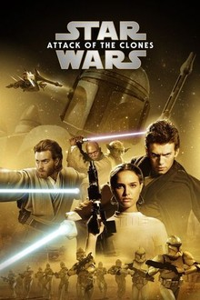
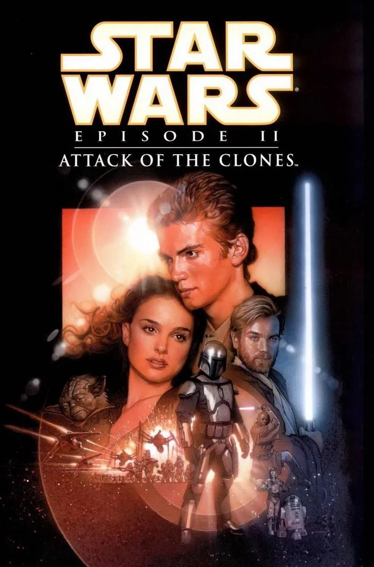

Attack of the Clones
In *Attack of the Clones*, the galaxy is on the brink of civil war as the Republic faces growing threats from separatist systems. Former Jedi apprentice Count Dooku leads the separatist movement, posing a challenge to the Republic. Jedi Knight Obi-Wan Kenobi and his apprentice, Anakin Skywalker, are assigned to protect Senator Padmé Amidala after an attempt on her life. Anakin and Padmé grow closer, while Obi-Wan uncovers a secret army of clones being developed for the Republic. The Jedi eventually engage in a massive battle against Dooku's forces, marking the start of the Clone Wars and signaling the rising darkness surrounding Anakin's destiny.


Characters